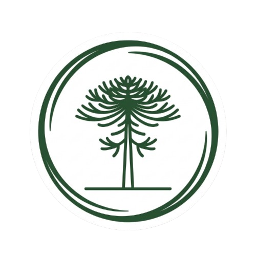
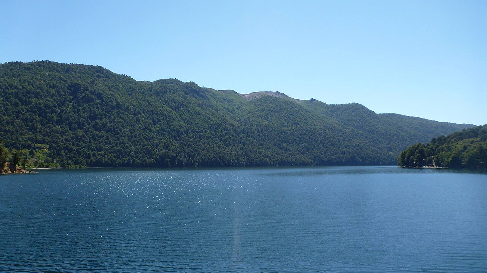

¿Cuándo viajar?
El clima y las actividades disponibles cambian según la temporada. Revisa las condiciones antes de salir.

EcoRuta TemucoConsejos sencillos para planificar un recorrido responsable.
El clima y las actividades disponibles cambian según la temporada. Revisa las condiciones antes de salir.
Usa ropa cómoda y adecuada al clima. Para una caminata, lleva agua y calzado apropiado.

Respeta los senderos, no dejes basura y sigue las indicaciones de cada lugar.